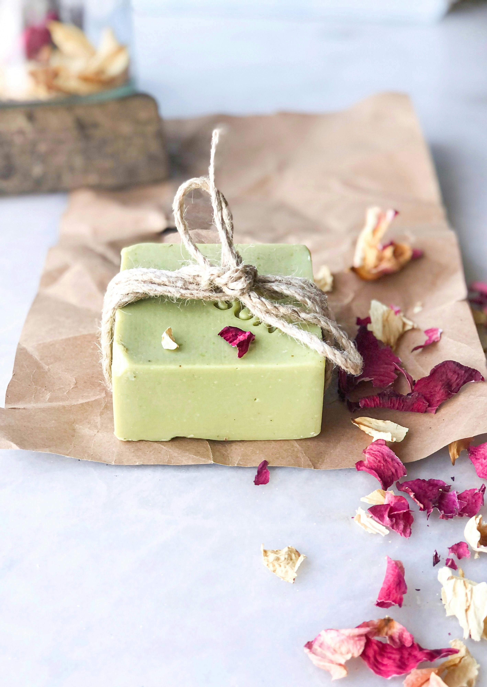
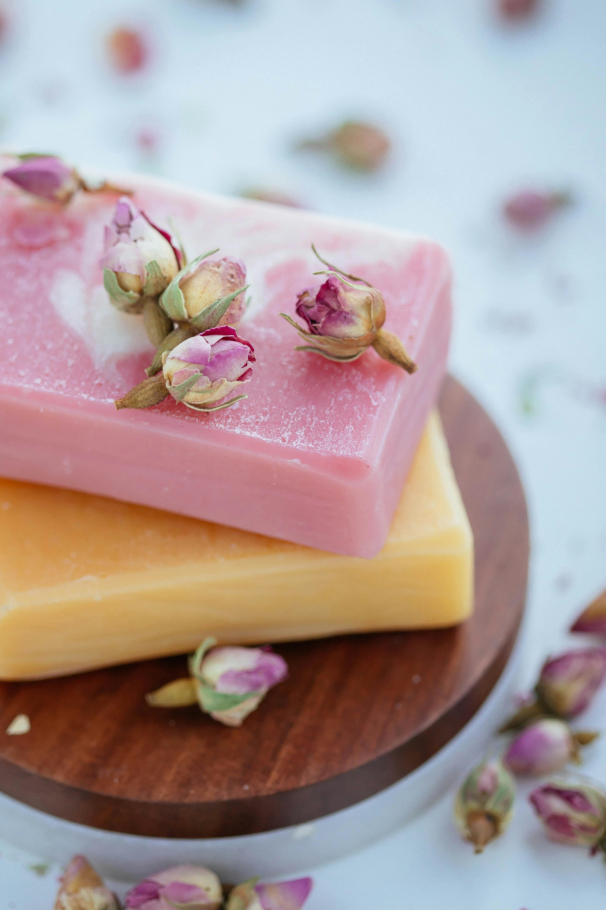

Organic skin care is about embracing the power of natural ingredients to nourish and protect your skin. From homemade face masks to gentle cleansers, discover the secrets to achieving healthy, radiant skin.
The Benefits Of Handmade Soap For Your Skin
Handmade soaps are crafted with natural oils, herbs, and botanicals that provide gentle cleansing without stripping the skin of its natural moisture. They can be customized to suit different skin types and offer therapeutic benefits through aromatherapy and herbal ingredients.
Gentle ingredients, hydration, and skin barrier repair are becoming the future of healthy glowing skin.
“Nature’s Touch for Healthy Skin & Handmade Beauty. We create organic skin care and artisan soaps using pure, skin-loving ingredients that nourish naturally and elevate your daily self-care ritual.”


Natural Ingredients For Healthy Skin
Pure, skin-loving ingredients that nourish naturally and elevate your daily self-care ritual.
- Cold Process Soap Making
- Hot Process Soap Making
- Melt & Pour Creative Soaps
- Herbal & Ayurvedic Soaps